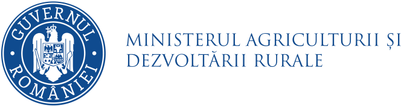
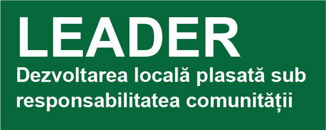

Patru piloni.
Un singur motor.
Un partener tehnic, nu doar un „freelancer de site-uri”. Gândim sistemul cap-coadă — proiectat, automatizat și securizat sub un singur acoperiș.
Full-stack de ultimă generație
Aplicații web pe TanStack Start, React 19 și Vite, rulate la edge — rapide pe orice telefon.
Automatizări care lucrează pentru tine
Scripturi Python și Node.js, sincronizări API și fluxuri care elimină munca manuală repetitivă.
Infrastructură sigură
Supabase + PostgreSQL cu Row-Level Security, criptare AES-GCM 256-bit și date găzduite în UE.
Arhitectură strategică
Audituri și deciziile grele de inginerie — luate înainte ca prima linie de cod să intre în producție.
Hai să vorbim.
Spune-ne pe scurt despre proiect sau problema IT pe care o ai. Revenim în cel mult 24 de ore cu pașii recomandați și o estimare orientativă — gratuit.
Scanează și cere o ofertăDescoperă serviciile complete și trimite-ne un mesaj direct de pe telefon.





Proiect finanțat prin FEADR — Planul Strategic PAC 2023–2027, măsura LEADER.
Beneficiar: AXION VISION SRL · Cod proiect F36010806109241703226
Ecosisteme digitale de înaltă performanță pentru firma ta.
Consultanță IT, site-uri rapide și mentenanță pentru IMM-uri din România — de la audit și arhitectură până la operare zilnică.